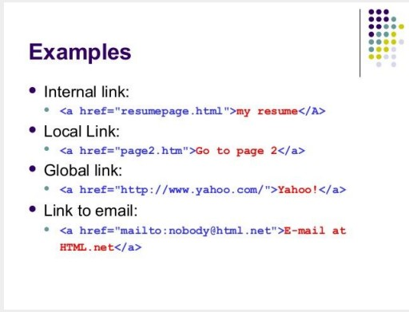

HTML Links
HTML links are hyperlinks.
● When you move the mouse over a link,
the mouse arrow will turn into a little
hand.
Internal Links
● An “Internal Link” is a link in your site
that navigates the visitor to another
page in your website.
External Links
● The “External Link” navigates the
visitor away from your site to another
website in the internet (like
http://google.com).
